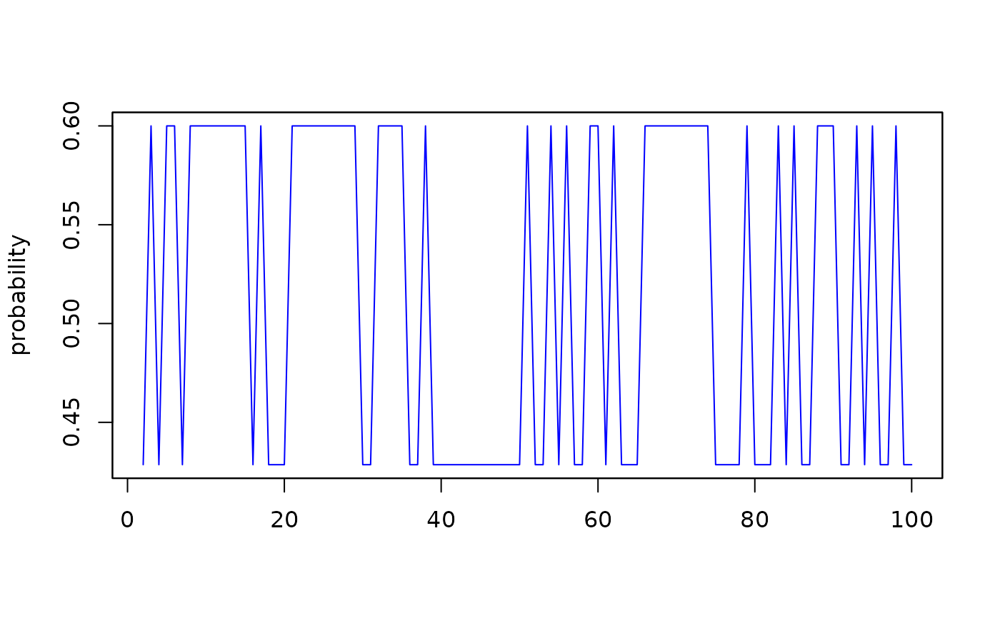

Extraction functions for 'logitx' objects
coef.logitx.RdExtraction functions (of type S3 methods) for objects of class 'logitx'
Usage
# S3 method for class 'logitx'
coef(object, ...)
# S3 method for class 'logitx'
fitted(object, zero.prob=FALSE, ...)
# S3 method for class 'logitx'
logLik(object, ...)
# S3 method for class 'logitx'
plot(x, ...)
# S3 method for class 'logitx'
print(x, signif.stars=TRUE, ...)
# S3 method for class 'logitx'
summary(object, ...)
# S3 method for class 'logitx'
toLatex(object, digits = 4, gof = TRUE, nonumber = FALSE, nobs = "T", ...)
# S3 method for class 'logitx'
vcov(object, ...)Arguments
- object
an object of class 'logitx'
- x
an object of class 'logitx'
- zero.prob
logical. IfFALSE(default), then the probabilities of a one are returned as fitted values. IfTRUE, then the zero probabilities are returned as fitted values- signif.stars
logical. IfTRUE, then p-values are additionally encoded visually, seeprintCoefmat- digits
integer, the number of digits in the LaTeX print
- gof
logical that determines whether goodness-of-fit information should be included in the LaTeX print
- nonumber
logical that determines whether a "nonumber" tag should be added to each equation in the LaTeX print
- nobs
character that determines the label for the number of observations in the LaTeX print
- ...
additional arguments
Author
Genaro Sucarrat, http://www.sucarrat.net/
Examples
##simulate from ar(1):
set.seed(123) #for reproducibility
y <- logitxSim(100, ar=0.3)
##estimate and store result:
mymod <- logitx(y, ar=1)
##extract stuff:
coef(mymod)
#> intercept ar1
#> -0.2876818 0.6931466
fitted(mymod)
#> 2 3 4 5 6 7 8 9
#> 0.4285715 0.5999999 0.4285715 0.5999999 0.5999999 0.4285715 0.5999999 0.5999999
#> 10 11 12 13 14 15 16 17
#> 0.5999999 0.5999999 0.5999999 0.5999999 0.5999999 0.5999999 0.4285715 0.5999999
#> 18 19 20 21 22 23 24 25
#> 0.4285715 0.4285715 0.4285715 0.5999999 0.5999999 0.5999999 0.5999999 0.5999999
#> 26 27 28 29 30 31 32 33
#> 0.5999999 0.5999999 0.5999999 0.5999999 0.4285715 0.4285715 0.5999999 0.5999999
#> 34 35 36 37 38 39 40 41
#> 0.5999999 0.5999999 0.4285715 0.4285715 0.5999999 0.4285715 0.4285715 0.4285715
#> 42 43 44 45 46 47 48 49
#> 0.4285715 0.4285715 0.4285715 0.4285715 0.4285715 0.4285715 0.4285715 0.4285715
#> 50 51 52 53 54 55 56 57
#> 0.4285715 0.5999999 0.4285715 0.4285715 0.5999999 0.4285715 0.5999999 0.4285715
#> 58 59 60 61 62 63 64 65
#> 0.4285715 0.5999999 0.5999999 0.4285715 0.5999999 0.4285715 0.4285715 0.4285715
#> 66 67 68 69 70 71 72 73
#> 0.5999999 0.5999999 0.5999999 0.5999999 0.5999999 0.5999999 0.5999999 0.5999999
#> 74 75 76 77 78 79 80 81
#> 0.5999999 0.4285715 0.4285715 0.4285715 0.4285715 0.5999999 0.4285715 0.4285715
#> 82 83 84 85 86 87 88 89
#> 0.4285715 0.5999999 0.4285715 0.5999999 0.4285715 0.4285715 0.5999999 0.5999999
#> 90 91 92 93 94 95 96 97
#> 0.5999999 0.4285715 0.4285715 0.5999999 0.4285715 0.5999999 0.4285715 0.4285715
#> 98 99 100
#> 0.5999999 0.4285715 0.4285715
logLik(mymod)
#> 'log Lik.' -67.11308 (df=2)
plot(mymod)

print(mymod)
#>
#> Date: Fri Jul 26 19:58:59 2024
#> Dependent var.: y
#> Method: Maximum Likelihood (logit)
#> Variance-Covariance: Ordinary
#> No. of observations: 99
#> Sample: 2 to 100
#>
#> Estimation results:
#>
#> coef std.error t-stat p-value
#> intercept -0.28768 0.28868 -0.9966 0.16073
#> ar1 0.69315 0.40825 1.6979 0.04637 *
#> ---
#> Signif. codes: 0 ‘***’ 0.001 ‘**’ 0.01 ‘*’ 0.05 ‘.’ 0.1 ‘ ’ 1
#>
#> Log-lik.(n=99) -67.1131
summary(mymod)
#> Length Class Mode
#> call 3 -none- call
#> date 1 -none- character
#> version 1 -none- character
#> control 0 -none- list
#> y 99 -none- numeric
#> y.name 1 -none- character
#> y.index 99 -none- numeric
#> mX 198 -none- numeric
#> mXnames 2 -none- character
#> logit.method 1 -none- numeric
#> n 1 -none- numeric
#> k 1 -none- numeric
#> df 1 -none- numeric
#> initial.values 2 -none- numeric
#> lower 1 -none- numeric
#> upper 1 -none- numeric
#> eps.tol 1 -none- numeric
#> coefficients 2 -none- numeric
#> logl 1 -none- numeric
#> convergence 1 -none- numeric
#> iterations 1 -none- numeric
#> evaluations 2 -none- numeric
#> message 1 -none- character
#> fit 99 zoo numeric
#> vcov 4 -none- numeric
toLatex(mymod)
#> \begin{eqnarray}
#> Pr(y_t = 1| ...) &=& \frac{1}{1 + \exp(-\widehat{h}_t)} \\[2mm]
#> \widehat{h}_t &=& - \underset{(0.2887)}{0.2877} + \underset{(0.4082)}{0.6931}ar1 \\[2mm]
#> && LogL=-67.1131 \qquad T = 99 \nonumber
#> \end{eqnarray}